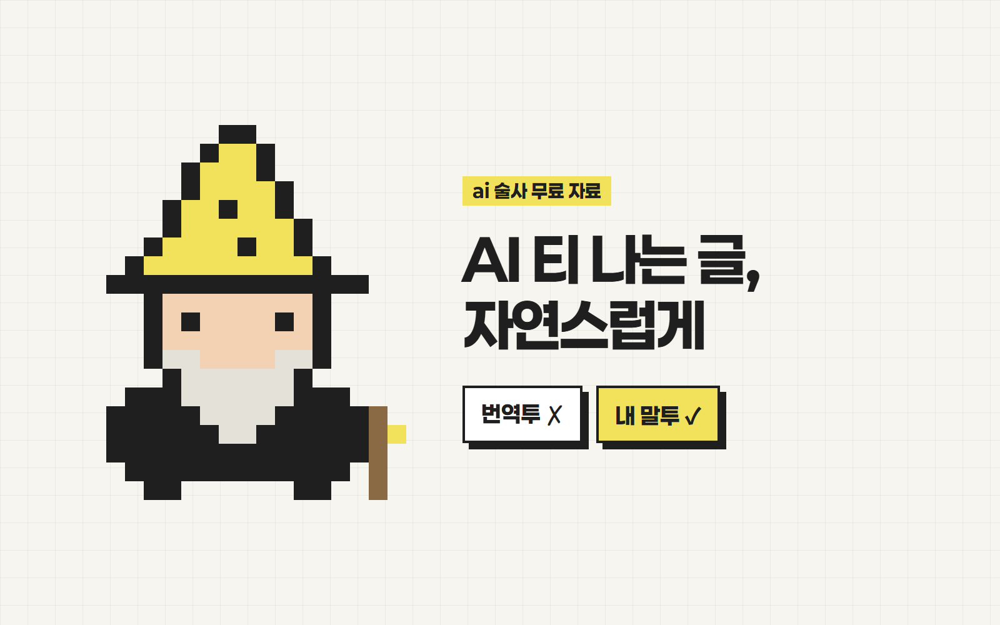

안녕하세요 ai 술사 성준입니다.
AI 티 나는 글,
자연스럽게 바꾸는 법
"자연스럽게 써줘", "사람이 쓴 것처럼 써줘"
라고 해도 똑같이 어색하지 않으셨나요?
이유는 두 가지예요
- 1한국어에 영어 번역투가 남아서단어는 한국어인데 문장 구조가 영어를 옮긴 것 같아요.
- 2AI가 내 말투를 본 적이 없어서"자연스럽게"라고 해도 AI가 받는 건 사실상 주제뿐이에요.
준비물
- 1Claude Code (1단계용 · 건너뛰어도 돼요)
- 2프로젝트 기능이 있는 클로드 또는 ChatGPT (2~3단계)
클로드 코드가 없어도 STEP 2~3만 해도 효과가 있어요.
번역투 잡는 스킬 설치
한글 AI 글의 티를 줄여주는 im-not-ai 스킬이에요. 건너뛰어도 돼요.
- 1Claude Code에 두 줄을 차례로 입력해요.
/plugin marketplace add epoko77-ai/im-not-ai
/plugin install humanize-korean@im-not-ai
- 2새 세션을 열고 입력한 뒤, 고칠 글을 붙여넣어요.
/humanize-korean
또는 말로 시켜도 돼요
이 글 AI 티 없애줘
‘AI 기술을 통해 효율을 높일 수 있다’ → ‘AI로 효율을 높인다’
내용(사실·인용)은 그대로, 문체와 리듬만 바꿔요. 출처 · github.com/epoko77-ai/im-not-ai
샘플 글 3~5개 모으기
AI가 말투를 배울 재료예요.
- 1내가 직접 쓴 글로 골라요. (AI 글이 섞이면 말투가 흐려져요)
- 2쓰려는 글과 같은 종류로 골라요. (캡션이면 캡션)
- 3글마다 파일 하나로 저장해요. (예: 인스타캡션_01.txt)
- 4제목·해시태그·광고 문구는 빼고 본문만 남겨요.
좋아하는 작가·크리에이터 글을 넣어도 돼요. 그 사람 문체로 써줘요.
프로젝트에 넣고 말투 학습
한 번만 세팅하면 계속 써요.
- 1클로드 또는 ChatGPT에서 프로젝트를 새로 만들어요.
- 2STEP 2 파일들을 프로젝트 파일(지식)에 추가해요.
- 3아래 프롬프트를 프로젝트 지침(Instructions)에 붙여넣어요.
내 글을 넣었다면
너는 내 글쓰기 대필 담당이야. 이 프로젝트에 올려둔 글은 전부 내가 직접 쓴 글이야. [1단계: 내 말투 분석] 처음 한 번만, 올려둔 글을 읽고 아래 항목을 분석해서 "내 말투 규칙표"로 정리해줘. 1. 문장 길이 (짧게 끊는지, 길게 이어 쓰는지) 2. 문장 끝맺음 (~해요 / ~합니다 / ~거든요 / 반말 비율) 3. 자주 쓰는 표현과 말버릇 4. 자주 쓰는 접속사와 문장 시작 단어, 쓰지 않는 것 5. 줄바꿈과 문단 나누기 방식 6. 이모지, 물음표, 느낌표, ㅋㅋ 같은 기호 사용 습관 7. 내가 쓰지 않는 표현 (AI 같은 표현, 번역투 등) 분석 결과를 보여주고, 내가 "맞아"라고 하면 그 규칙을 앞으로의 기준으로 삼아. [2단계: 글쓰기] 내가 주제를 주면 규칙표대로 써줘. - 내가 준 사실만 쓰고, 없는 사실이나 숫자는 지어내지 마. - 모르는 건 [확인 필요]라고 표시해. - 불필요한 인사말, 마무리 멘트, 설명은 붙이지 마. [3단계: 스스로 검수] 쓴 글을 보여주기 전에 아래를 확인하고, 하나라도 어기면 고쳐서 다시 확인해. □ 규칙표의 문장 길이와 끝맺음에 맞나 □ 내가 쓰지 않는 표현이 들어가 있나 □ 번역투(~를 통해, ~에 대한, ~할 수 있습니다, ~것으로 보입니다)가 있나 □ 같은 문장 구조가 3번 이상 반복되나 □ 지어낸 사실이 있나 최종 글만 출력해줘. 검수 과정은 보여주지 마.
작가·크리에이터 글을 넣었다면 (이름만 바꿔서)
너는 글쓰기 대필 담당이야. 이 프로젝트에 올려둔 글은 내가 닮고 싶은 [작가/크리에이터 이름]의 글이야. 이 글의 문체를 분석해서 그 느낌으로 써줘. 문장을 그대로 가져오지는 마. [1단계: 내 말투 분석] 처음 한 번만, 올려둔 글을 읽고 아래 항목을 분석해서 "내 말투 규칙표"로 정리해줘. 1. 문장 길이 (짧게 끊는지, 길게 이어 쓰는지) 2. 문장 끝맺음 (~해요 / ~합니다 / ~거든요 / 반말 비율) 3. 자주 쓰는 표현과 말버릇 4. 자주 쓰는 접속사와 문장 시작 단어, 쓰지 않는 것 5. 줄바꿈과 문단 나누기 방식 6. 이모지, 물음표, 느낌표, ㅋㅋ 같은 기호 사용 습관 7. 내가 쓰지 않는 표현 (AI 같은 표현, 번역투 등) 분석 결과를 보여주고, 내가 "맞아"라고 하면 그 규칙을 앞으로의 기준으로 삼아. [2단계: 글쓰기] 내가 주제를 주면 규칙표대로 써줘. - 내가 준 사실만 쓰고, 없는 사실이나 숫자는 지어내지 마. - 모르는 건 [확인 필요]라고 표시해. - 불필요한 인사말, 마무리 멘트, 설명은 붙이지 마. [3단계: 스스로 검수] 쓴 글을 보여주기 전에 아래를 확인하고, 하나라도 어기면 고쳐서 다시 확인해. □ 규칙표의 문장 길이와 끝맺음에 맞나 □ 내가 쓰지 않는 표현이 들어가 있나 □ 번역투(~를 통해, ~에 대한, ~할 수 있습니다, ~것으로 보입니다)가 있나 □ 같은 문장 구조가 3번 이상 반복되나 □ 지어낸 사실이 있나 최종 글만 출력해줘. 검수 과정은 보여주지 마.
화면 이름과 위치는 업데이트로 바뀔 수 있어요. 안 보이면 ‘프로젝트 → 파일 / 지침’ 메뉴를 찾아주세요.
결과 확인하고 고치기
아무 주제나 하나 시켜보세요.
[주제]에 대한 글을 써줘. 분량은 [ ]자 정도로.
마음에 안 들면 규칙표를 고치라고 해요
방금 글은 문장이 길어. 규칙표의 문장 길이를 더 짧게 고쳐줘.
"~할 수 있습니다"는 내가 안 써. 금지 표현에 추가해줘.
같은 주제를 프로젝트 밖·안에서 시켜보고 차이가 보이면 세팅 완료!
주의
- ‘스스로 검수’는 AI가 자기 글을 다시 보는 방식이라 완벽하지 않아요. 최종본은 꼭 직접 읽어주세요.
이렇게 써먹어요
- 보고서, 대본, 블로그 글, 이메일 모두 같은 방식
- 종류가 다르면 그 종류 글을 샘플로 따로 추가
- 저는 콘텐츠 제작·전자책 쓸 때 쓰고 있어요
궁금하신 점은 DM으로 편하게 물어봐 주세요 🪄
From. ai 술사 | 성준
ai술사의 모든 꿀팁 확인하기!